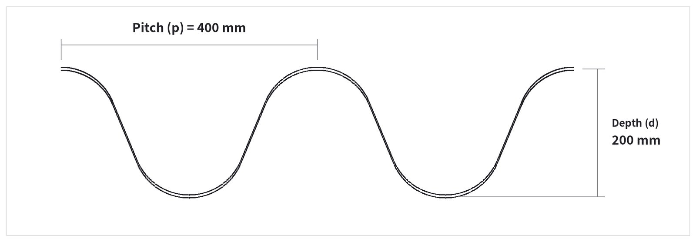
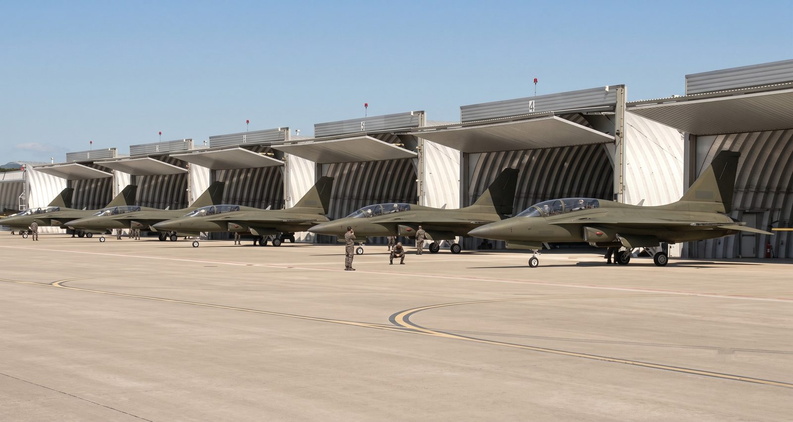

Astar ve SH DOOR kapılarından HAS·HAAS bütüncül tasarımına kadar. REXSTEEL, kemer astarı, patlamaya dayanıklı kapı, mühendislik ve bütüncül tasarımı tek irtibat noktasından sunar.
Altyapıdaki ana ürünümüz ile sığınak astarlarını ayırıyoruz.
B381 koruge plaka, çift dalgalı Wonder Arch ve 400×200 Steel Rolled Arch Liner farklı kesitlerdir. Yalnızca plaka kalınlığını artırmak, askerî spall liner şartnamesini karşılamaz.
01 / ALTYAPI YAPILARI · B381
Özgün REXSTEEL ürün ölçü çizimi
381 × 140 mm
Yaygın adıyla 380×140 büyük koruge profil. Wonder Arch’ın küçük takviye dalgaları bulunmaz.
REXSTEEL’in altyapı için ana koruge plaka ürünü
REXSTEEL, menfez ve ekolojik geçiş gibi altyapı yapıları için ana ürün olarak 381×140 üretir. Bu ürünü uçak sığınaklarında spall liner olarak kullanmayız.
Belirtilen ABD / NATO spall liner kesitlerinin alternatifi değildir Uçak sığınaklarında kullanılmaz — REXSTEEL uygulama politikası
02 / DOUBLE-WAVE STEEL ARCH LINER
Wonder Arch çift dalgalı panel · Ürün 3B görseli
610 × 355 mm
ABD askerî / NATO proje şartlarına tabi ürünler
Her projenin şartname ve onay koşulları geçerlidir
Wonder Arch Liner Büyük ana dalga ile küçük takviye dalgalarını birleştiren çift dalgalı kesit.
Askerî teknik kılavuzlarda ve proje şartnamelerinde ele alınan tip
TP 15 §8.1: 2 ft sinüzoidal dalga = yaklaşık 610 mm Double Corrugated Steel Spall Liner Çift dalgalı kesit · 3,2 mm çelik plaka
Yaklaşık 610 mm ana hatve + çift dalga + 3,2 mm Proje şartnamesi: Section 05 30 00 §1.3 · §2.1.1
03 / STEEL ROLLED ARCH LINER

400×200 derin koruge astar · Kesit
400 × 200 mm
ABD askerî / NATO proje şartlarına tabi ürünler
Her projenin şartname ve onay koşulları geçerlidir
Steel Rolled Arch Liner · Haddelenmiş Çelik Kemer Astarı Küçük takviye dalgaları bulunmayan tek derin koruge profilli astar.
5 mm sınıfı çelik · 6 GA şartları kontrol edilir
Steel Rolled Arch Liner Tek derin koruge · 5 mm sınıfı plaka 6 GA için sözleşmedeki ana metal kalınlığı tanımı doğrulanmalıdır
Projeye özgü kesit, kalınlık ve bağlantı şartları geçerlidir Ayrıntılı özellikler teknik görüşmede paylaşılır
PROFILE & SPECIFICATION
Geometri ve kalınlığı birlikte kontrol edin.
Özellik
610 × 355 · Çift dalgalı
400 × 200 · Tek derin koruge
Ürün adı
Double-Wave Steel Arch Liner
Steel Rolled Arch Liner
Tedarik kalınlıkları
3.2 / 4.0 / 4.5 mm
3 / 4 / 5 / 6 / 7 / 8 mm
Uygulanacak şartname
İncelenen proje şartnamesi: çift dalgalı, en az 3,2 mm
İncelenen proje şartları: 5 mm sınıfı; 6 GA koşulları doğrulanır
Malzeme · Yüzey koruması
Proje şartnamesine uygun malzeme, yüzey işlemi ve elektroforetik boya
Proje şartnamesine uygun yapı çeliği ve yüzey işlemi
Çift dalgalı kesit, beton parçalarının içeri saçılmasını sınırlamada önemli etkisi olan temel bir tasarım unsurudur.Ana dalga ve takviye dalgaları yerel burkulma ve deformasyonu etkiler. Kesit, kalınlık, bağlantı, ankraj ve beton birlikte değerlendirilmelidir. B381’i kalınlaştırmak, belirtilen astarın yerine geçmesini sağlamaz.
PROJECT SPECIFICATION
Çift dalga · Minimum kalınlık
İncelenen proje şartnamesinde, Section 05 30 00 — Steel Arch Liner §1.3 çift dalgalı kesiti, §2.1.1 en az 3,2 mm kalınlığı gerektirir. Kesit ve bağlantı değişiklikleri onaya tabidir.
TP 15 · §8.1
Yaklaşık 610 mm ana hatve
HAS geliştirme ve deney geçmişinde 2 ft sinüzoidal dalga (609,6 mm) açıklanır. Bu ifade tek başına 355 mm derinliği, küçük takviye dalgalarını, 3,2 mm kalınlığı veya REXSTEEL ürün onayını belirtmez.
SYSTEM DESIGN & APPROVAL
Tesis bütününde tasarım · Onay
TP 15 §1.5 kapsamında DESR 6055.09 ve TP 26 ile ilgili tasarım ve inceleme çerçevesi, UFC 3-340-01 ve UFC 3-340-02 ile ürün şartnameleri ayrı ele alınır. Uygulama, sözleşmenin nihai şartname, çizim ve onay koşullarına tabidir.
Kaynaklar: TP 15 Rev.5 (Temmuz 2026) ve incelenen proje şartnamesi. Kamuya açık UFGS 05 30 00’ın başlığı Steel Decksolup ayrı bir dokümandır. Bu açıklamalar genel ABD / NATO ürün onayı veya aynı koşullarda nicel performans karşılaştırması değildir. B381’in sığınaklarda kullanılmaması REXSTEEL uygulama politikasıdır.
NUMERICAL ANALYSIS / WONDER ARCH
Patlama Simülasyonu Araştırma Ekibi (Yeungnam Üniversitesi · Kyungsung Üniversitesi)
Yeungnam ve Kyungsung üniversiteleri ekibinin LS-DYNA ile incelediği dış patlama ve nüfuz sonrası patlamaya yapısal tepkiler. Gerçek analiz görsellerini ve temel sonuçları inceleyin.
TYPE A / DISPLACEMENTDış patlama altında yer değiştirme
TYPE A / STRESSDış patlama altında gerilme
TYPE B-2 / POST-PENETRATION EXPLOSIONNüfuz sonrası patlamaya yapısal tepki
BLAST SIMULATION / LS-DYNA
Tanıtım filmindeki analiz sahnelerini izleyin
Bunlar kurgulanmış tanıtım klipleridir. Aşağıdaki sonuçlar sunulan raporun belirli analiz koşulları ve değerlendirme anlarına aittir.
Dış patlama analizi — Rapor, kullanılan analiz koşulları ve değerlendirme yöntemi kapsamında yapısal güvenliğin sağlandığı sonucuna varmıştır.
Nüfuz sonrası patlama analizi — Çok katmanlı yapıda yerel akma ve plastik deformasyon oluşmuştur. Rapora göre genel kemer geometrisi analiz sonuna kadar korunmuş ve belirgin içeri parça saçılması gözlenmemiştir.
Bunlar sayısal analiz sonuçlarıdır; tam ölçekli patlama deneyi belgesi değildir. Gözlemler tek başına parça hızı, derinliği veya koni açısı için nicel uygunluğu kanıtlamaz. Yeni C-130 büyük HAS konseptini veya 4,5 mm genişletilmiş tasarımı doğrudan doğrulamaz; ayrı analiz gerekir.
HISTORICAL FULL-SCALE TESTS
Tam ölçekli patlama deney kayıtları
ABD Hava Kuvvetleri ve Savunma Nükleer Ajansının tarihî deneyleri, sığınak sistemlerinin gelişimini açıklar. Tarihler, yapı tipleri ve sonuçlar ayrı değerlendirilmelidir.
Gerçek patlama anı · Hava fotoğrafıAD0886769 / AFWL-TR-71-65 · Şekil 10 · Basılı s.18 · 1971Deney sonrası komşu sığınaktaki deformasyonAynı rapor · Şekil 13 · Basılı s.21 · A sığınağı duvarında mafsal deformasyonu
Jon M. Jorgensen · ABD Hava Kuvvetleri Silah Laboratuvarı. Standart çift dalgalı kemer sığınağındaki iç patlamanın komşu sığınaklara etkileri incelenmiştir.
Bulguların kapsamı Patlamanın gerçekleştiği sığınak yıkılmış, komşu sığınaklarda farklı düzeylerde hasar oluşmuştur. Fotoğraflar patlama anını ve deney sonrası durumu gösterir.
RAPOR 02 / 1981 deneyleri
Üçüncü nesil HAS tam ölçekli deneyleri
High Explosive Testing of Hardened Aircraft Shelters ADP001768 · DISTANT RUNNER
Ronald R. Bousek · ABD Hava Kuvvetleri / Savunma Nükleer Ajansı. Üçüncü nesil sığınakların tam ölçekli dış ve iç patlama deneyleriyle patlayıcı emniyet mesafesi ve yapısal tepki değerlendirilmiştir.
Bulguların kapsamı Dış patlamaya karşı koruma ve iç patlamada göçme davranışı birlikte raporlanmıştır. Bazı iç patlama deneylerinde sığınak ve uçak yıkılmıştır; bunlar uçaktan bırakılan bomba deneyleri olarak sunulmamaktadır.
Fotoğraflar özgün rapordaki tarihî deney numunelerine aittir. Güncel REXSTEEL ürünleri için ABD askerî onayı veya tüm patlama koşullarında güvenlik garantisi değildir. 1971 raporunun ilk sayfasında 1977 tarihli kamuya açıklama onayı bulunmaktadır.
İlgili haber / 25 Nisan 2024 · RWNews (菱傳媒)
Tayvan sığınak astarı şartları ve kalınlığı tartışması
Haberde, Tayvan’ın planladığı çift oluklu çelik kaplamaya ilişkin aşağıdaki eleştiri bir kaynağa atfedilmektedir.
Geleneksel Çince · İlgili alıntı
台灣規劃興建的「雙波浪鋼材襯裡」並非美軍規範材質，且厚度僅3mm
Çeviri
Tayvan’da inşası planlanan çift oluklu çelik kaplama, ABD askerî malzeme şartnamelerine uygun değildir ve kalınlığı yalnızca 3 mm’dir.
Kaynak: RWNews (菱傳媒) · 2024.04.25
MANUFACTURING
İmalattan saha montajına
Yüzey hazırlığı, boyama, kalite kontrolleri ve saha montajını fotoğraflarla inceleyin.
Uçak tipine ve koruma amacına uygun, üç sığınak konsepti
Çelik taşıyıcılı hangarlar ve beton örtülü HAS farklı sistemlerdir. Wonder Arch 610×355 astarlar, projeye göre 3.2 / 4.0 / 4.5 mm kalınlık seçenekleriyle değerlendirilir.
01 / STEEL FRAME HANGAR
Büyük uçaklar için Çelik taşıyıcılı hangar
Ana çelik taşıyıcı büyük açıklığı taşır. İç astar, mineral yün, dış aşıklar ve dış zırh plakaları gereken koruma koşullarına göre düzenlenir.
50 m genişlik · Planlanan kapı açıklığı 44×14 m
Galerideki bir hacim planlama örneğidir. C-130J dış ölçülerine göre nominal kapı payı her yanda yaklaşık 1,80 m, üstte 2,16 m’dir. Kapı çerçevesi, ekipman ve işletme payları ayrıca incelenmelidir.
02 / CONCRETE-COVERED HAS
Standart boyutlu Beton örtülü HAS
Wonder Arch astar ve beton örtü birlikte planlanır. Döküm sırasındaki geçici destekler, tamamlanmış beton yapıdan ayrı kontrol edilir.
Referans tipler: yaklaşık 21,6 m ve 25,0 m
Bunlar kamuya açık TP 15 §8.1’deki mevcut HAS genişlikleridir; 4,5 mm ürünümüzün izin verilen maksimum açıklığı değildir. HAAS kesit ve kalınlıkları da proje şartnamesine göre belirlenir.
03 / LARGE HAS STUDY
C-130 sınıfı Büyük HAS çalışması
C-130J’nin 40,41 m kanat açıklığı ve 11,84 m yüksekliğine göre giriş ve kullanılabilir iç hacimden başlayan ayrı bir büyütülmüş tasarım.
Büyük ölçeğe uygun destek ve örtü tasarımı
22 m sınıfı HAS, aynı kalınlık ve destek sayısıyla doğrudan büyütülemez. 4,5 mm uygulama kapsamı, beton kalınlığı, temel ve kapılar bütün sistemin yapısal ve koruma doğrulamasıyla belirlenir.
HAS uçak korumasını, HAAS korumalı alarm hazırlığını esas alır. Astar yalnızca kısaltmaya göre seçilmez; görev, geometri, yükler ve onaylı şartname belirleyicidir.
WONDER ARCH GALLERY
Wonder Arch Galerisi
Wonder Arch saha fotoğrafları
Küçük uçak hangarı iç mekânıKemer astarı montajı · Yakın görünümKemer astarı montajı · Genel görünümÇift oluklu kemer astarı birleşim detayı
Büyük uçak çelik hangarı · Tasarım konsepti
50 m genişlik · 66 m uzunluk · 23,5 m maksimum yükseklik · Planlanan kapı 44×14 m. Hacim ve sistem incelemesi için 3B modeldir; kesinleşmiş çelik, kapı, bağlantı veya koruma tasarımı değildir.
Büyük uçaklar için hacim planlaması3B konsept · Varsayılan ölçüler · Kapı tipi ve tahrik sistemi ayrı tasarlanırAna taşıyıcı ve çok katmanlı kabuğun farklı görevleri3B konsept · Wonder Arch astar düzeni · Beton örtülü HAS’tan farklı sistem
C-130 sınıfı büyük HAS · Büyütülmüş beton örtülü konsept
Beton kemer ve iç Wonder Arch astardan oluşan büyük HAS hacim çalışması. Uçak, C-130 sınıfı ölçülerini gösteren basit modeldir; kapılar açık gösterilmiştir. Gerçekleşmiş proje veya yapısal/koruma onayı almış tasarım değildir.
C-130 sınıfı için büyük HAS hacim planlaması3B konsept · Uçak yalnızca ölçek içindir · Kapı ayrı tasarlanırBeton kemer + iç Wonder Arch astar3B kesit konsepti · Örtü, donatı, destek ve bağlantılar kesinleşmemiştir
Aynı ölçekte sığınak tipleri
Üçüncü nesil HAS · Sürgülü kapıKonsept görseli · Aynı ölçekÜçüncü nesil HAS · Menteşeli kapıKonsept görseli · Aynı ölçekHAAS · Menteşeli kapı (2 bölmeli)Konsept görseli · Aynı ölçek
Sığınak düzenleri
Toprak örtülü HASKonsept görseli

Örtülü tip HASKonsept görseliÖrtülü koruyucu mevzi — Wonder Arch Liner 610×355Konsept görseliÜçüncü nesil HAS — Wonder Arch Liner 610×355Konsept görseliÜçüncü nesil HAS yerleşimiKonsept görseliÇok bölmeli kemer sığınak — Wonder Arch Liner 400×200Konsept görseliAlarm sığınağı sundurması — Wonder Arch Liner 400×200Konsept görseliÇok bölmeli sundurma tipi sığınak — Wonder Arch Liner 400×200Konsept görseli
Koruma katmanları
Çok katmanlı koruma konsepti (1)Konsept görseliÇok katmanlı koruma konsepti (2)Konsept görseli
Astar ve patlamaya dayanıklı kapılardan yapısal/patlama analizine, saha desteğine ve bütüncül tasarıma kadar gereken kapsam birlikte belirlenir.
ATedarik
Astar plakaları ve aksesuarlar
İmalat çizimleri · Montaj çizimleri · Metraj
Haddehane sertifikaları
İhracat ambalajı · Fabrika muayenesi
BTedarik + Mühendislik
A seçeneğinin tamamı
İngilizce / yerel dilde montaj kılavuzları
Koreli Professional Engineer onaylı yapım aşaması astar hesapları
Geçici destek hesapları ve konseptleri · Montaj planı
İlk sığınağın başlangıcında saha desteği + Uzaktan destek
CBütüncül tasarım · Entegre mühendislik
B seçeneğinin tamamı
Sorumlu tasarım mühendisi (EOR) desteği · Tasarım inceleme ve doğrulama
LS-DYNA astar simülasyonu · Belgelendirme desteği
SH DOOR kapı tedariki ve tasarım koordinasyonu
HAS·HAAS bütüncül tasarım paketi — ayrı teklif
Bütüncül tasarım ayrıca fiyatlandırılır. REXSTEEL, uzman tasarım ortaklarıyla HAS·HAAS tasarımı yürütür. Disiplin kapsamları, EOR, mesleki onaylar ve yerel onay/izin sorumlulukları proje sözleşmesinde belirlenir.
BLAST DOOR PARTNER
Astarla uyumlu patlamaya dayanıklı kapılar
SH DOOR TECH ile açıklıklar, çerçeveler, raylar, tahrik sistemleri ve astar/beton yapım sırası birlikte incelenir. Kapı tipi ve koruma özellikleri projeye göre belirlenir.
Tesis geometrisini ve istenen tedarik kapsamını paylaşın; ürün, tasarım ve saha desteği konusunda bilgi verelim. Ayrıntılı teknik dokümanlar gizlilik sözleşmesiyle paylaşılır.